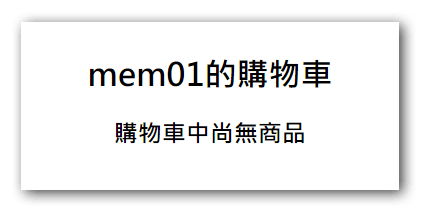
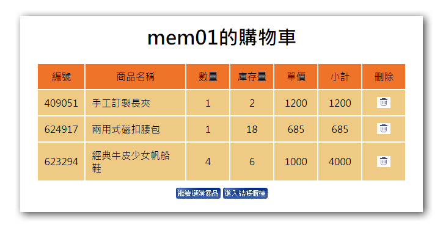
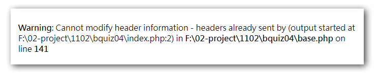

購物功能我們切成兩個部份來製作，一個是會員登入及註冊，一個則是登入後的購物功能，題目在這邊的描述並不是很清楚，簡單來說，就是購物車的功能必須是登入的會員才能看到及使用的，如果不是登入的會員則會被導引去進行會員註冊或登入。
購物車功能
- 先前在
./api/chk_pw.php中已經增加了一個session變數，用來紀錄使用者登入的狀況 - 購物車的功能我們使用
session來完成，方法是當網址有id和qt兩個參數時，就把資料放入session中存起來。1
2
3if(isset($_GET['id']) && isset($_GET['qt'])){
$_SESSION['cart'][$_GET['id']]=$_GET['qt'];
} - 在
./front/buycart.php中增加對會員登入的判斷，如果使用者是登入的狀況，則可以看到購物車的內容，如果使用者不是登入的狀況，則將使用者導向會員登入頁面1
2
3
4if(!isset($_SESSION['mem'])){
to("?do=login");
exit();
} - 考量有一種狀況是登入的會員使沒有點選
我要購買按鈕，而是直接點選購物車連結過來，這時我們要排除購物車中沒有商品的狀況1
2
3
4
5
6
7
8<h1 class='ct'><?=$_SESSION['mem'];?>的購物車</h1>
<?php
if(empty($_SESSION['cart'])){
echo "<h2 class='ct'>購物車中尚無商品</h2>";
exit();
}

- 接著把
$_SESSION['cart']中所存的商品資訊列出來1
2
3
4
5
6
7
8
9
10
11
12
13
14
15
16
17
18
19
20
21
22
23
24
25
26
27
28
29
30
31
32
33<table class="all">
<tr class="tt ct">
<td>編號</td>
<td>商品名稱</td>
<td>數量</td>
<td>庫存量</td>
<td>單價</td>
<td>小計</td>
<td>刪除</td>
</tr>
<?php
foreach($_SESSION['cart'] as $id => $qt){
$goods=$Goods->find($id);
<tr class="pp">
<td class="ct"><?=$goods['no'];?></td>
<td><?=$goods['name'];?></td>
<td class="ct"><?=$qt;?></td>
<td class="ct"><?=$goods['stock'];?></td>
<td class="ct"><?=$goods['price'];?></td>
<td class="ct"><?=$goods['price']*$qt;?></td>
<td class="ct">
<img src="icon/0415.jpg" onclick="delCart(<?=$goods['id'];?>)">
</td>
</tr>
<?php
}
?>
</table>
<div class="ct">
<a href="index.php"><img src="icon/0411.jpg"></a>
<a href="?do=checkout"><img src="icon/0412.jpg"></a>
</div>

在建立購物商品列表時，使用內建的css 樣式.all時會發現表格的大小超出版面範圍，這時可以去css檔案調整一下內距和右側區塊的大小，讓畫面可以容納更多的內容。
1
2
3
4
5.all td
{
min-width:50px;
padding:10px;
}雖然參考畫面中的購物車列表把商品數量以input的欄位來顯示，但題目中並沒有說明這個input欄位是否有其它的功能，
比如改變數量時，小計欄位也會跟著改變，為了減少不必要的爭議，這邊我是使用直接顯示的方式來處理，如果要改變數量的話，可以回到商品詳細內容去重新填入數量即可。刪除購物車商品的功能我們使用ajax的方式建立一個 delCart(id) 函式，將要刪除的商品id傳到後台api去，然後由api來刪除session中的商品內容，完成後再使用
location.href='?do=buycart來重新載入頁面同時清除網址帶的商品參數，藉此達成題目要求的功能1
2
3
4
5function delCart(id){
$.post('api/del_cart.php',{id},()=>{
location.href='?do=buycart'
})
}在
./api/目錄中增加一個del_cart.php的檔案，並撰寫刪除購物車商品的功能。1
2include_once "../base.php";
unset($_SESSION['cart'][$_POST['id']]);
結帳櫃台功能
在
./front/目錄中增加check.php檔案，並撰寫列出會員資料及商品清單功能，這邊的填寫資料內容會完整的寫入訂單資料表中，而不是以參照的方式去更新會員資料表，理由是在電商網站的流程中，本來就允許訂購者和收件人的資料是不同的，這邊只是題目沒說明清楚而已。在傳送訂單資料方面我們採用ajax的方式來傳送表單的內容，這樣在處理彈出視窗訊息時會比較單純一些。
另外一個題目沒提到的細節是在送出訂單後的購物車及會員登入狀態要怎麼處理？如果檢定時只照題目的流程走一遍，那做到寫入訂單就可以了，但是當要操作第二筆訂單時，就會發生原有的購物車內容還有上一筆訂單的資料在的狀況，所以這邊建議如果時間上來得及，同時也已經做到這一步了，可以把一些細節補上，這樣在評分時會減少一些爭議。
1
2
3
4
5
6
7
8
9
10
11
12function buy(){
//建立表單的資料
let data=$("input").serialize();
//傳送表單的資料到後做訂單處理
$.post('api/buy.php',data,function(){
//顯示提示訊息後將頁面導向首頁
alert("訂購成功\n感謝您的選購")
location.href="index.php"
})
}我的做法是在ajax傳送表單資料後彈出感謝訊息的視窗，然後把使用者導回首頁去；而此同時，在後端的api除了收集ajax傳來的內容並寫入資料表外，也會同時清除購物車的session內容，這樣使用者就有一台空的購物車可以進行第二筆訂單。
1
2
3
4
5
6
7
//儲存訂單資料
$Ord->save($data);
//刪除購物車(檢定可不做)
unset($_SESSION['cart']);最後的補強是在首頁的功能連結上，針對會員登入的連結加入判斷，如果會員登入成功，則會員登入改成登出。
在
./api/logout.php中撰寫登出功能，這邊我們為了兼容前台會員登出及後台的管理者登出，因此使用switch..case的方式來分辨要登出的對像，如果是管理者登出，則只要清楚管理者的session，如果是會員登出，則除了清楚會員的session，也會一併清除會員的購物車session。在
index.php中的會員登出連結上加入logout=member的參數，同時也可以順手在admin.php的登出功能上加入logout=admin參數。
補充
headers already sent by 錯誤，這個問題是在session和header()相關的函式使用時會發生的問題，一般來說這些指令的前面不能有任何的輸出，如果發生了，可以使用函式來開啟緩衝解決；或是直接修改 php.ini 中的輸出緩衝設定也可以
1 | output_buffering=4096 |
